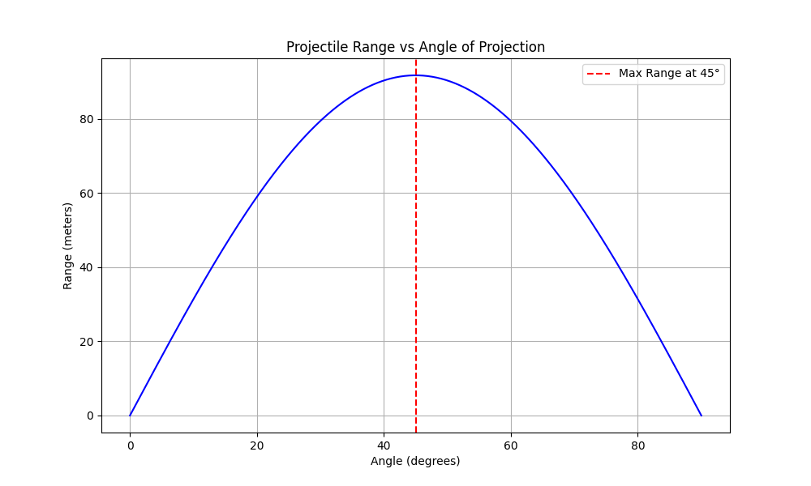
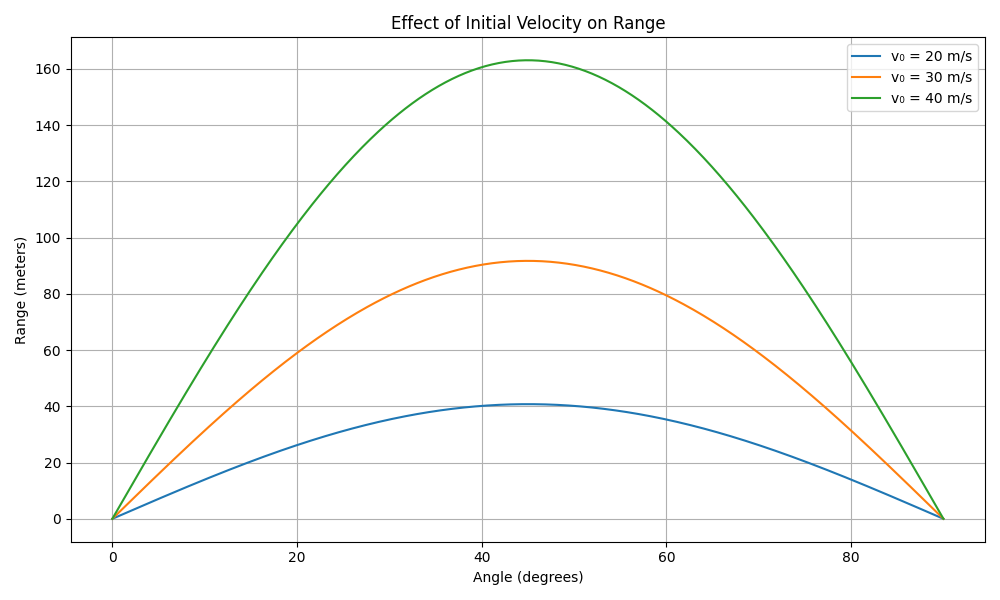
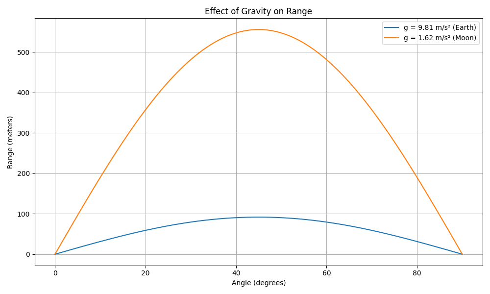

Investigating the Range as a Function of the Angle of Projection
Motivation
Projectile motion, while seemingly simple, offers a rich playground for exploring fundamental principles of physics. The goal is to analyze how the range of a projectile depends on its angle of projection. Despite its simplicity, this system unveils deep physical insights through linear and quadratic relationships.
Parameters like initial velocity, gravitational acceleration, and launch height influence the trajectory, allowing us to model diverse real-world phenomena—from sports to rocketry.
1. Theoretical Foundation
Equations of Motion
We consider a projectile launched from ground level (height = 0) with: - Initial velocity \(( v_0 )\) - Angle of projection \(( \theta )\) - Gravitational acceleration \(( g )\)
The horizontal and vertical components of velocity:
Time of flight (until the projectile returns to \(y\) = 0):
Horizontal Range:
This equation reveals a sinusoidal dependence of range on $ 2\theta $. The maximum range occurs when $ \theta = 45^\circ $.
2. Analysis of the Range vs Angle
Python Code: Plotting the Range as a Function of Angle
import numpy as np
import matplotlib.pyplot as plt
# Parameters
v0 = 30 # initial velocity in m/s
g = 9.81 # gravitational acceleration in m/s²
# Angles from 0 to 90 degrees
angles_deg = np.linspace(0, 90, 500)
angles_rad = np.radians(angles_deg)
# Range formula: R = (v0^2 * sin(2θ)) / g
ranges = (v0**2 * np.sin(2 * angles_rad)) / g
# Plotting
plt.figure(figsize=(10, 6))
plt.plot(angles_deg, ranges, color='blue')
plt.title("Projectile Range vs Angle of Projection")
plt.xlabel("Angle (degrees)")
plt.ylabel("Range (meters)")
plt.grid(True)
plt.axvline(45, color='red', linestyle='--', label='Max Range at 45°')
plt.legend()
plt.show()

Observations:
-
The range reaches its maximum at 45°.
-
Complementary angles (e.g., 30° and 60°) yield the same range.
-
The curve is symmetric around 45°.
3. Influence of Parameters
And with appying modifications on $ v_0 $ \(g\) this is how can affect the plot
Python Code
import numpy as np
import matplotlib.pyplot as plt
# Common parameters
angles_deg = np.linspace(0, 90, 500)
angles_rad = np.radians(angles_deg)
# ========== Effect of Initial Velocity ==========
v0_values = [20, 30, 40] # initial velocities in m/s
g = 9.81 # gravitational acceleration (Earth)
plt.figure(figsize=(10, 6))
for v0 in v0_values:
ranges = (v0**2 * np.sin(2 * angles_rad)) / g
plt.plot(angles_deg, ranges, label=f'v₀ = {v0} m/s')
plt.title("Effect of Initial Velocity on Range")
plt.xlabel("Angle (degrees)")
plt.ylabel("Range (meters)")
plt.grid(True)
plt.legend()
plt.tight_layout()
plt.show()
# ========== Effect of Gravity ==========
g_values = [9.81, 1.62] # Earth and Moon gravity
v0_fixed = 30 # fixed initial velocity
plt.figure(figsize=(10, 6))
for g in g_values:
ranges = (v0_fixed**2 * np.sin(2 * angles_rad)) / g
label = f'g = {g} m/s² ({"Earth" if g==9.81 else "Moon"})'
plt.plot(angles_deg, ranges, label=label)
plt.title("Effect of Gravity on Range")
plt.xlabel("Angle (degrees)")
plt.ylabel("Range (meters)")
plt.grid(True)
plt.legend()
plt.tight_layout()
plt.show()


Key Takeaways:
Higher velocity = longer range.
Lower gravity (e.g., Moon) = much longer range.
4. Practical Applications
Real-World Adjustments
Uneven terrain affects landing point → adjust final height.
Air resistance shortens range → not covered in ideal model.
Wind adds horizontal forces → requires differential equations.
Example: Adding a Launch Height
Python Code
--- ```python def range_with_height(v0, theta_deg, h, g=9.81): theta = np.radians(theta_deg) vx = v0 * np.cos(theta) vy = v0 * np.sin(theta) t_flight = (vy + np.sqrt(vy**2 + 2 * g * h)) / g return vx * t_flight h = 10 # 10 meters launch height ranges = [range_with_height(30, angle, h) for angle in angles_deg] plt.figure(figsize=(10, 6)) plt.plot(angles_deg, ranges) plt.title("Range vs Angle (with Launch Height h = 10 m)") plt.xlabel("Angle (degrees)") plt.ylabel("Range (meters)") plt.grid(True) plt.show()Insights: Maximum range shifts to lower than 45° if starting from a height.
Launch height increases overall range.
5. Limitations of the Idealized Model
| Assumption | Real-World Factor | Impact |
|---|---|---|
| No air resistance | Drag force | Reduces range |
| Constant gravity | Varies with altitude | Small effect in most cases |
| Flat terrain | Hills or valleys | Changes point of impact |
| No wind | Wind can push/pull projectile | Alters horizontal motion |
Suggestions for Improvement
-
Use
scipy.integrate.solve_ivpto include air drag. -
Use parametric terrain modeling for variable height.
-
Apply wind forces using vector additions in numerical simulation.
Conclusion
Projectile range depends heavily on angle, initial speed, and gravitational field. The theoretical model, while idealized, provides great insight and a foundation for more complex simulations. With simple Python tools, we can visualize and analyze this behavior effectively—bridging the gap between theory and practice.